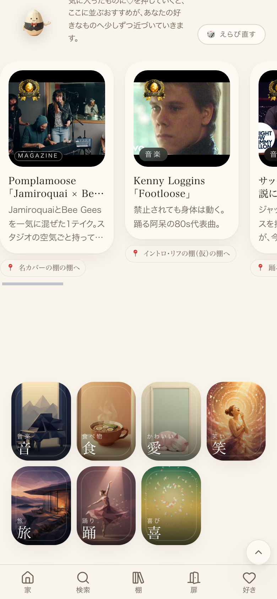
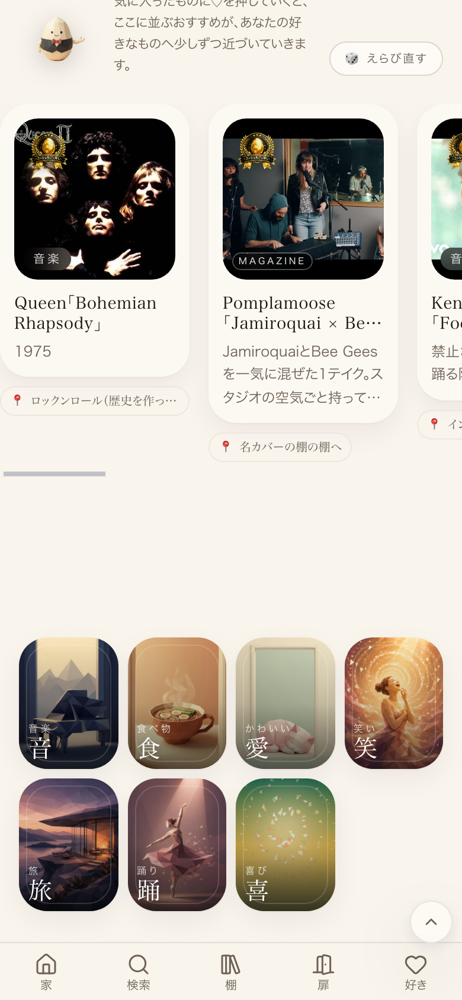
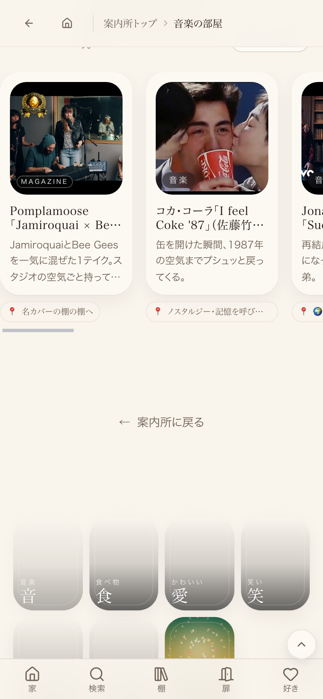

concierge: 40x38px / コンテナ短辺136px = 短辺の28.0% (井上陽水×3, 少女時代×4, 音楽の扉×1) good-cover: 32x38px / コンテナ短辺136px = 短辺の28.0% (井上陽水×1, 音楽の扉×2) 目標28%・許容±1pt (DESIGN_RULES.badge, src/lib/designRules.ts) → 11件中11件PASS 行内カード高さ差: 全グループ0px(min=max)



| 確認項目 | 結果 |
|---|---|
| 井上陽水ページ(cover-guide?artist=inoue-yousui) | concierge3件+good-cover1件 全て28.0% |
| 少女時代ページ(cover-guide?artist=girls-generation-hrs) | concierge4件 全て28.0% |
| 音楽の扉(/world/music) | concierge1件+good-cover2件 全て28.0% |
| 山下達郎ページ(cover-guide?artist=tatsuro) | 表示中バッジ0件(対象曲なし・崩れなし) |